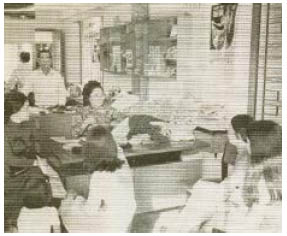

Đứng dậy nào, Jacob. Cơn đau bắt đầu dịu đi, nhưng trái tim anh vẫn còn loạn nhịp, như thể mỗi nhịp tim đều có thể là nhịp đập cuối cùng.
Không sao, Jacob. Chỉ vài bước nữa thôi.
Cầm lấy chiếc nỏ. Cáo sẽ nhanh chóng xuất hiện thôi.
Anh thực sự đã tự xoay xở để đứng dậy.
Điều gì sẽ xảy ra nếu Cáo không tìm được anh đúng lúc? Người có muốn tự đâm mũi tên vào ngực mình không, Jacob? Ý tưởng thật khôi hài.
Khi nhìn gần bức tượng ngự trên ngai vàng sống động như thật, như thể Guismund đã tạo ra nó bằng xương bằng thịt. Đôi mắt chết chóc nhìn chằm chằm như xuyên qua Jacob, khi anh bước về phía chiếc ghế đẩu. Thiên đường. Chân anh bước đi cũng vấp váp như nhịp đập trái tim anh.
“Ngươi thật không dễ chết nhỉ.” Gã lai bước ra từ cái bóng không một tiếng động, y như lúc gã ở trong ngôi mộ.
Ngươi để lỗ tai ở đâu vậy, Jacob? Một trong những sai lầm cũ rích nhất trên thế giới này: quên mất sự cẩn trọng khi kho báu đã trong tầm tay. Anh sẽ chết như một kẻ mới vào nghề.
Gã lai săm soi những bức tranh trên tường khi tiến về phía anh. Jacob sờ khẩu súng của mình, nhưng cái chết làm anh trở nên chậm chạp, và gã Goyl đã chĩa súng vào anh trước khi anh kịp rút vũ khí từ thắt lưng của mình ra.
“Đừng ép ta phải rút ngắn vài phút cuối cùng của đời ngươi,” Nerron lên tiếng, trong lúc nhắm bắn vào đầu Jacob. “Ai mà biết được? Có lẽ ngươi sẽ còn đến một giờ. Làm cách nào ngươi mở được cánh cửa? Cánh cửa sắt chết tiệt ấy làm bỏng đôi tay ta.”
“Ta cũng không biết vì sao.” Chiếc nỏ đã ở rất gần, đến mức anh chỉ cần vươn tay ra là lấy được, nhưng Jacob biết gã Goyl sẽ nổ súng. Anh đã học được cách đọc ý nghĩ trên gương mặt có vân ấy. Nó gợi anh nhớ đến em trai mình. “Ai đã thả ngươi ra?”
“Nam nhân ngư. Ta đã có cảm giác sẽ hữu ích nếu để hắn sống, mặc dù ta đã muốn vặn cái cổ đầy vảy của hắn cả tá lần trong những tuần vừa rồi.” Nerron nhìn quanh tìm kiếm. “Cáo đâu rồi?”
Rút súng ra, Jacob. Ít nhất cũng thử xem nào. Người mất gì chứ?
Nhưng có lẽ chỉ đơn giản là trong anh không còn nhiều sự sống nữa.
Nerron đứng yên trước mặt anh.
“Cô ta rất xinh đẹp, và ta ít nói như thế về phụ nữ người trần. Ngươi nghĩ thế nào, cô ấy sẽ để ta làm cô ấy thoải mái chứ? Cuối cùng cô ấy cũng đi cùng với tên yêu râu xanh đấy thôi.”
Đúng, Jacob rất muốn bắn chết gã.
“Ta chắc chắn tất cả các tờ báo ngày mai sẽ đều đăng cáo phó cho Jacob vĩ đại.” Nerron tiến về phía chiếc nỏ, súng vẫn chĩa vào đầu Jacob. “Có lẽ họ sẽ đến chỗ ta, để nghe ta kể ngươi đã trút hơi thở cuối cùng như thế nào. Ta hứa ta sẽ miêu tả nó thật cảm động.”
Jacob sờ vào dấu bướm ma rướm máu trên áo anh. Gần lắm rồi. Tay anh run rẩy. “Ngươi sẽ bán nó cho ai?”
“Ta chắc chắn ngươi sẽ rất bất ngờ.” Nerron cầm lấy cái nỏ.
Rắc.
Tiếng tích vang lên ngay khi gã Goyl cầm món vũ khí từ chiếc ghế đẩu, nhưng gã không chú ý đến nó. Gã vẫn chưa nhận ra cho đến khi gã tiến tới rìa của vòng tròn và đụng phải bức tường vô hình. Tiếng chửi thề mà gã thốt ra có thể khiến ngay cả một người lùn cũng phải đỏ mặt xấu hổ. Gã cố gắng bước ra khỏi rìa bức tranh đá nhiều màu, nhưng dĩ nhiên những viên đá không để gã thoát.
Anh chẳng cảm thấy được an ủi chút nào khi thấy gã Goyl có mắt như mù, nhưng có lẽ anh có thể tự biện hộ rằng nỗi sợ hãi cái chết cũng không làm người ta thông minh lên được.
Ngay từ đầu đó đã là một cái bẫy. Họ đã mắc bẫy ngay từ khi đọc những dòng chữ trong hầm mộ, và cái xác họ tìm thấy trong hầm mộ là của một kẻ khác chứ không phải của Kẻ Tàn Sát Phù Thủy. Đáng lẽ những móng tay phải làm người nghi ngờ rồi chứ, Jacob! Không có dấu vết của sự phân hủy? Trí thông minh của người đi đâu rồi?
Anh nhìn lên bức tượng trên ngai vàng. Kẻ Tàn Sát Phù Thủy đang ngồi trước mặt họ, và cái bẫy ông ta dựng lên cuối cùng đã sập xuống sau gần tám trăm năm.
Gã lai nện mạnh chiếc ghế đẩu vào bức tường vô hình bao xung quanh đến nỗi chiếc ghế vỡ tan tành.
“Chết tiệt! Cái gì sẽ giúp chúng ta thoát ra?”
Jacob khuỵu gối xuống. “Không gì cả,” anh nói. “Ông ta nghĩ rằng chúng ta là những hậu duệ. Đó chính là vấn đề.”
Anh rút chiếc túi có chứa nhúm tóc của Louis ra khỏi túi và ném nó ra xa, dù đã quá muộn. “Cái bẫy dành cho họ, nhưng họ đã thông minh hơn chúng ta nhiều. Đó là một ma thuật thời gian.”
Những phù thủy thường dùng đồng hồ cát, nhưng Guismund lại sử dụng chiếc đồng hồ được ông ta đem từ thế giới khác về. Ngươi đã từng nhìn thấy nó rồi, Jacob! Trí thông minh của người đi đâu rồi? Một vòng tròn ma thuật và một cái đồng hồ. Không cần thêm gì nữa.
“Ma thuật thời gian...” Gã Goyl cào lên bức tường vô hình. Nghe như tiếng cào trên mặt kính. “Chưa từng nghe qua. Nó có tác dụng thế nào?”
“Mỗi phút chúng ta ở trong này bằng một năm ở bên ngoài. Anh sẽ trở thành một lão già.
Phù thủy đặc biệt thích dùng cách này để giết kẻ thù mà họ căm ghét, nhưng Kẻ Tàn Sát Phù Thủy không hề có ý định trả thù. Đáng lẽ ngươi phải thấy điều này khi còn ở trong hầm mộ, Jacob!
“Khi một người nhốt con cháu của mình trong vòng tròn này,” giọng anh trở nên khàn đục hơn, “ông ta sẽ chiếm được tất cả những năm tuổi thọ của họ cho riêng mình. Ông ta đơn giản chỉ muốn lấy lại cuộc sống mà ông ta đã ban cho họ... càng nhiều, càng tốt. Rốt cuộc thì ông ta không muốn hồi sinh thành một ông lão già nua. Vì thế ông ta cố bắt hết cùng lúc cả ba đứa con.”
“Hồi sinh?” Gã lai nhìn chằm chằm bức tượng chân dung Guismund trên ngai vàng như không tin vào mắt mình.
“Đúng vậy. Đó không phải là một bức tượng. Nó là xác của ông ta. Kẻ Tàn Sát Phù Thủy muốn trở về từ cõi chết, kể cả khi ông ta phải giết con mình.”
Tích tắc. Tiếng đồng hồ chạy phá tan sự yên tĩnh và Jacob cảm thấy da thịt mình đang thối rữa.
“Có lẽ nó vẫn có tác dụng với Louis,” anh nói. “Chúng ta chẳng đem lại lợi ích gì cho ông ấy, nhưng nó vẫn sẽ giết chết chúng ta.”
Và Cáo sẽ không thể làm gì để giúp họ thoát ra. Chỉ có Guismund mới có thể phá vỡ vòng tròn. Jacob không biết mình mong muốn điều gì: Cáo tìm thấy họ khi họ vẫn còn sống, hay tốt hơn là tìm thấy khi mọi chuyện đã xong.
“Ngươi có nghe ta nói không, Kẻ Tàn Sát Phù Thủy?” Nerron thét lên với xác chết ngồi trên ngai vàng. “Ngươi bắt nhầm người rồi! Thả chúng ta ra! Con cái của ngươi không ngu ngốc như bọn ta, vả lại bọn họ cũng đã chết hết như ngươi rồi!”
Mỗi phút bằng một năm.
Gã lai khuỵu xuống trên đầu gối. Gã cũng bắt đầu khó thở như Jacob, nhưng phép thuật hầu như không ảnh hưởng đến bề ngoài của gã. Làn da của Goyl khó bị lão hóa.
“Hãy thừa nhận đi!” Gã hổn hển. “Hãy thừa nhận đi. Ta đã chiến thắng!”
Jacob nhắm mắt lại. Không, anh không muốn Cáo tìm thấy anh trong tình cảnh thế này. Anh muốn cô không bao giờ tìm thấy anh và tất cả những điều này chưa bao giờ xảy ra. Nhưng mọi việc đã bắt đầu từ đâu? Bắt đầu từ ngày anh đi xuyên qua tấm gương. Giá mà anh chưa từng làm điều đó, giá mà anh chưa từng tìm thấy cô, giá mà cáo cái đã chết khi mắc bẫy.
Anh giơ bàn tay lên. Trông như tay một lão già.
Anh không muốn Cáo tìm thấy anh trong tình cảnh thế này.